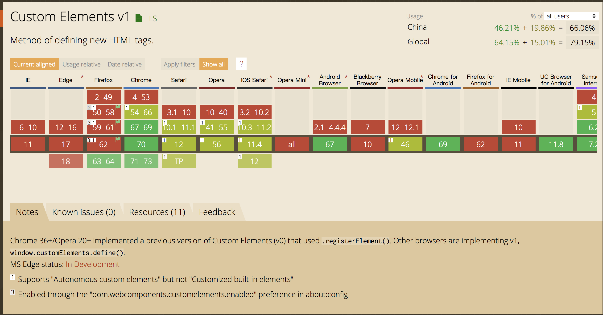
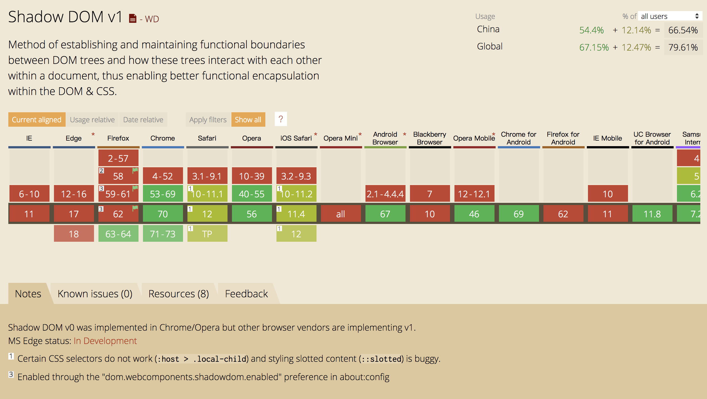
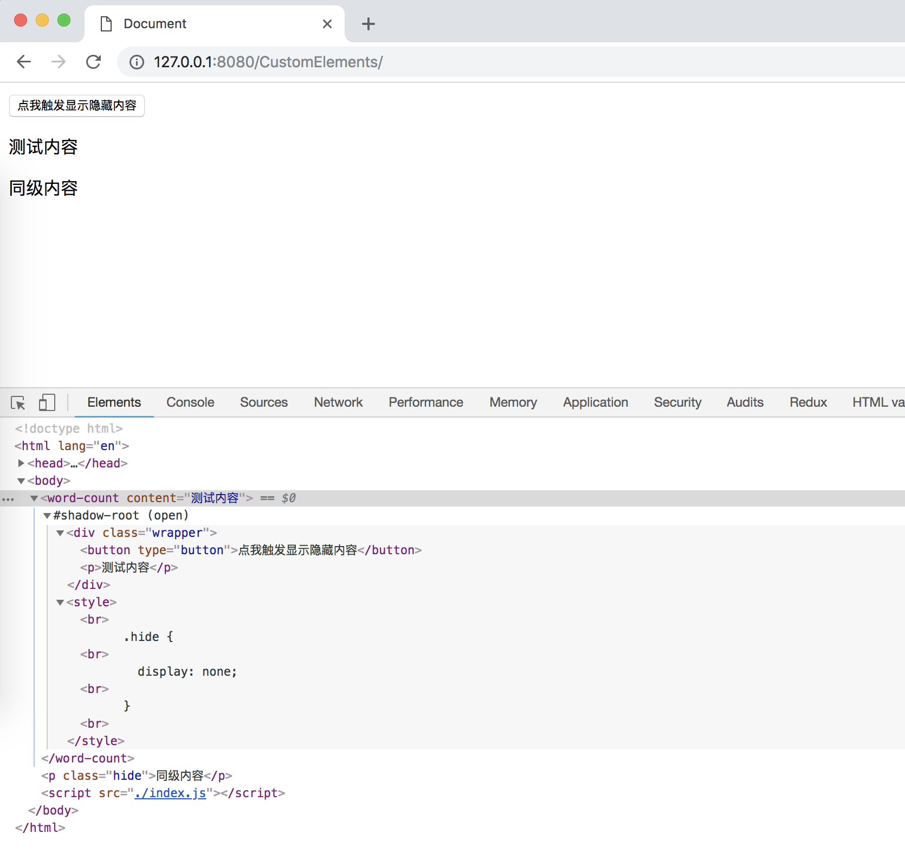
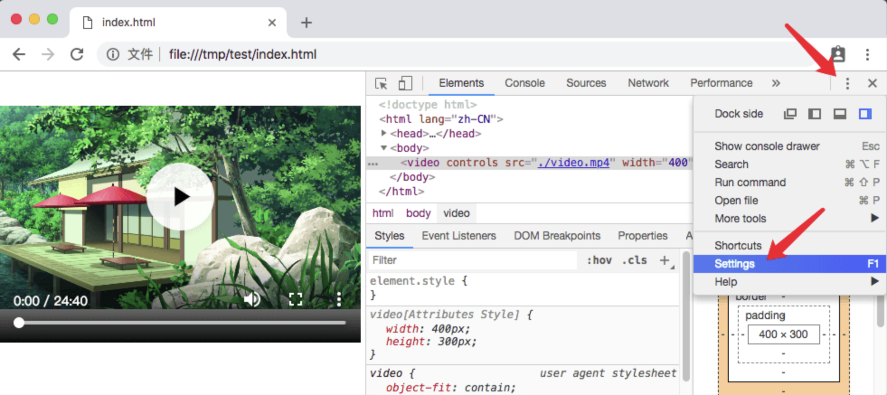
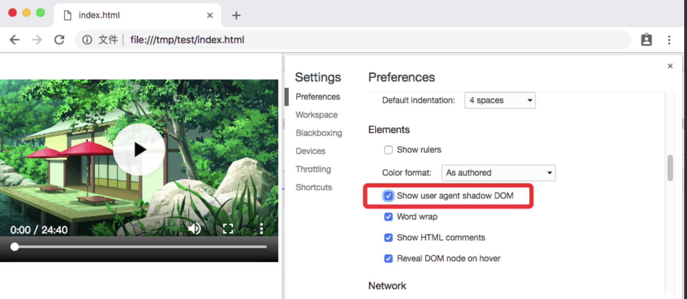
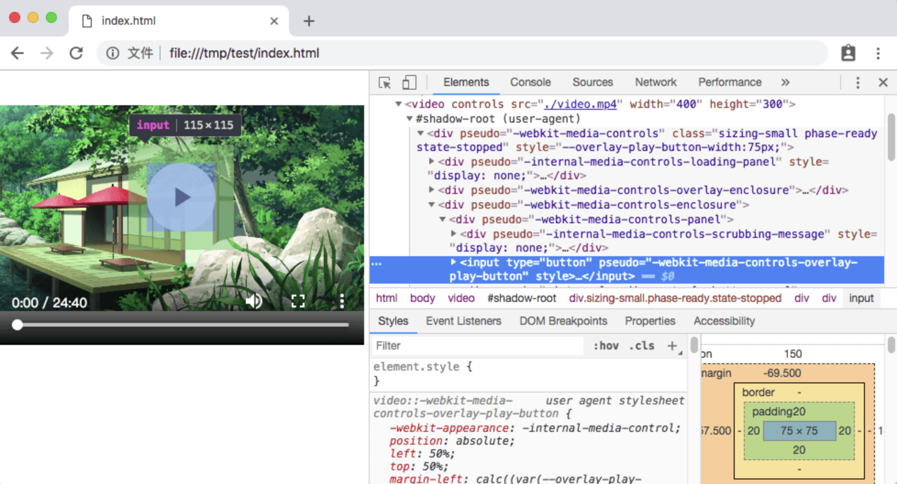

在Reactjs、Vuejs和Angular大行其道的今天，大家所熟知的web组件更多的是由框架本身定义的一套组件规范，如Reactjs的组件是一个js或者jsx文件，里面可以直接写类似于html标签的代码。Vuejs推崇的“关注点分离”自己创造了一种文件格式.vue作为组件，里面可以直接写web的“三剑客”：html、js和css。而angular（2.x以上）则不同于前面两者，官方示例则更建议以文件夹来创建组件，文件夹内分别存放html、css和js。但是不管怎样这些技术都并非来自浏览器原生或web标准。今天我们要说的是另外一种组件规范：Shadow DOM和Custom Element
其实Shadow DOM和Custom Element是web components的两个个子集，它还包括
- Custom Elements(v0/v1) --用于声明自定义标签
- Shadow DOM(v0/v1) --解决一个文档中可能需要大量交互的多个DOM树，并建立和维护各自功独立作用域
- HTML templates --Method of declaring a portion of reusable markup that is parsed but not rendered until cloned.
- HTML Imports --Method of including and reusing HTML documents in other HTML documents.
一般前两个一起配合使用，后两个一起配合使用，他们都来自W3C标准，并由浏览器原生实现。本文主要简单介绍Custom Elements+Shadow DOM去创建一个自定义的组件
首先看看Custom Elements的支持情况

然后是Shadow DOM的

注：这里我们直接排除V0，因为V0即将被废弃
可以看到目前的支持率不太理想，但是Firefox已经在最近发布一个版本中支持，chrome也早已支持。Safari目前只支持 autonomous custom elements（自主自定义标签），而 Edge也正在积极实现中。
我们先看看使用方法：
通过CustomElementRegistry 对象来处理web文档中的custom elements — 该对象允许你注册一个 custom element，返回已注册 custom elements的信息，等等。
可以通过 CustomElementRegistry.define()方法来注册一个custom element，该方法接受以下参数：
- 一个 DOMString，用于表示所创建的元素的名称。注意，custom element 的名称中必须要有短横线。
- 一个类对象，用于定义元素的行为。该类需要继承自HTMLParagraphElement
- 一个包含 extends属性的配置对象，是可选参数。它指定了所创建的元素继承自哪个内置元素，可以继承任何内置元素。
⚠️注意，当我们指定第三个参数的
extends属性后，将控制custom组件的使用方式
- Autonomous custom elements 是独立的元素，它不继承其他内建的HTML元素。你可以直接把它们写成HTML标签的形式，来在页面上使用。例如
，或者是 document.createElement("popup-info")这样。 - Customized built-in elements 继承自基本的HTML元素。在创建时，你必须指定所需扩展的元素（正如上面例子所示），使用时，需要先写出基本的元素标签，并通过 is 属性指定custom element的名称。例如
<p is="word-count" />, 或者document.createElement("p", { is: "word-count" })。
我们来实际操作一下，创建一个可交互的组件
js部分
1 |
|
html部分
1 | <word-count content="我是内容"></word-count> |
然后我们来看一下浏览器呈现的效果

此时我们可以看到此时word-count标签下面有一块特殊的地方叫shadow-root，这个其实和其他dom树是一样的，只是它创建了一个相对独立的空间，它的环境与外部是隔离的，比如样式不会影响最顶层的dom。
如果你用的是较版本新的chrome，可以打开开发者工具看和上图一样的效果.none样式仅仅影响了这个custom组件本身，并不会对最外层一样有none这个class的元素造成“污染”
同级内容
上面的“测试内容”在隐藏时，“同级内容”虽然也有.none样式，但是完全不受影响，因为display: none只作用了这个自定义组件内的元素
实际上，我们每天使用的chrome已经用Shadow DOM实现了很多组件了，如video、input、select、audio等等原生组件，当然默认chrome对此是关闭的，需要手动打开shadow Dom的显示


图片取自掘金 @创宇前端
然后我再选中video标签

所以目前自定义原生组件更多用于浏览器本身的组件实现，以及针对特定的浏览器做开发（如chrome），除了浏览器兼容性以外，更多的是还是没有解决开发中的痛点，比如复杂的dom结构可能更依赖于直接使用innerHtml或者第三方的库来实现。
当然以上只是Web Components的一点点东西，随着web标准的发展和完善可能会有更多的新特性出现，目前Shadow DOM和 Custom Elements已经到了V1的阶段，v0 规范将会在 Chrome 70 中被标记弃用警告，并在 2019 年 3 月左右从 Chrome 73 中删除。通过浏览器自身可以理解的方式去构建组件，我想这可能将在未来成为前端标准。